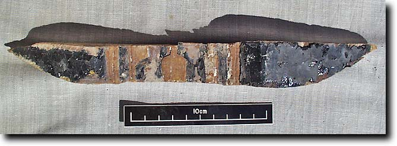
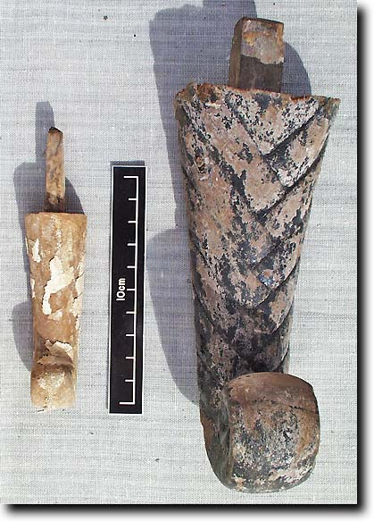
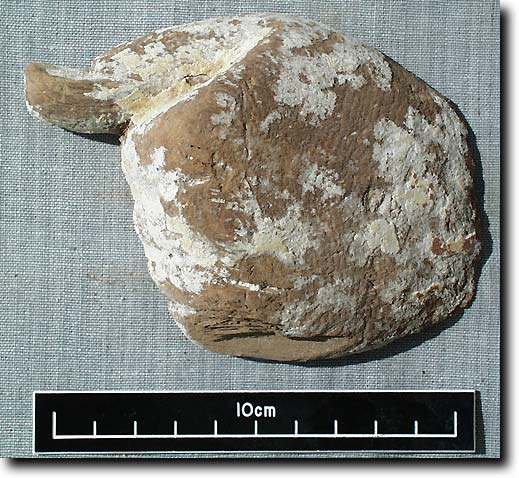
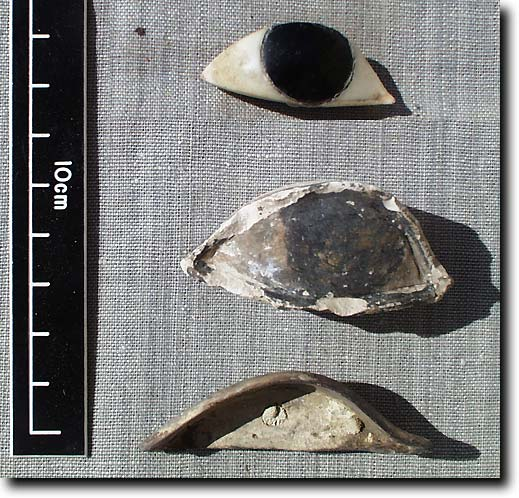
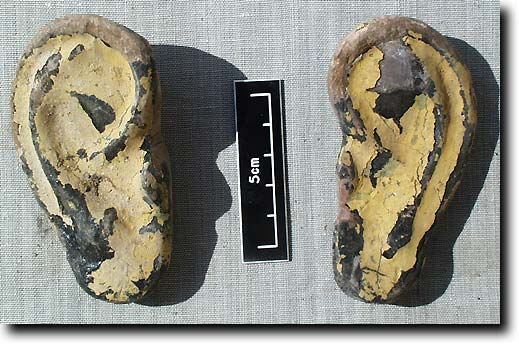

- Home
- Finds home
- Finds by date
- Finds by type
- Conservation
- Slideshow
- Site general
18th dynasty coffin fragments
|
The Egyptians began to use containers for the body in burials before the 1st dynasty. Coffins were mostly box-like during the Old Kingdom and the characteristic Egyptian anthropoid (human shaped) type appeared first in the Middle Kingdom. The development of coffins is very complex, and scholarly works on most types remain to be published. Different types are very characteristic of different periods, and are very important for dating other finds. The coffin fragments from the 18th dynasty part of TT99 are very broken indeed, but some do bear Senneferi's name, and it is quite clear that they are of the 'black' type, which were the predominant form from abut the time of Thutmose III until around the end of the dynasty. Decoration on these coffins was usually in yellow paint to represent gold; a few fragments of gold leaf were found which suggest that Senneferi had the means to have not just the imitation but the real thing as well. A number of fragments of other parts of coffins have also been recovered. The number of coffins is presently unclear, although it is very likely that the mummy of Senneferi was placed inside at least two of them. There could also be parts of burials of another person there, perhaps his wife.
 A fragment of a very elaborate black coffin with the name carved in relief and the hieroglyphs for the name of Senneferi painted yellow (99.98.0370)  Two divine-style beards from coffins (99.98.0639 and 99.98.0686)  A hand from a coffin (99.98.0460)  An inlaid pupil and cornea from the eye of a coffin (99.98.0308), and eye of limestone from another coffin (99.98.0636), and a wooden socket for another eye (99.98.0637)  A pair of ears from a black and yellow coffin (99.98.0615 and 99.98.0652)
|
© Nigel Strudwick 1997-2016